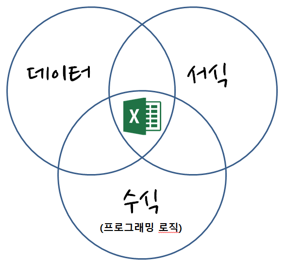
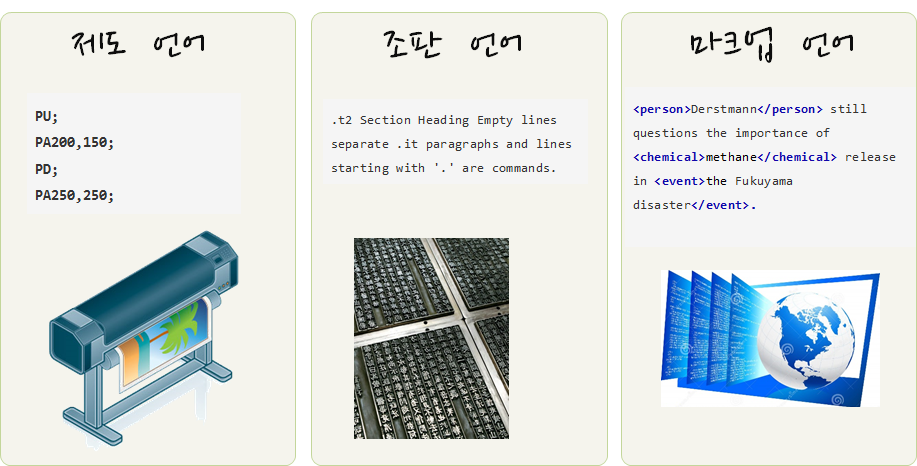

name: crisis-excel # 위기의 스프레드쉬트(엑셀)
.center[ ]
.footnote[ 스터디 뽀개기 7월 (2016-07-30), 분석행(Train to data-analysis)]
name: why-leave-excel # 스프레드쉬트를 버려야 하는 6가지 이유
스프레드쉬트를 사용하는 이유
- 항상 엑셀을 사용했다: 항상 데이터를 엑셀로 저장하고 분석해서 사용했다. 하지만, 버튼 하나로 데이터를 내보내기 쉽다.
- 데이터베이스를 사용할 만큼 데이터가 충분하지 않다: 데이터가 작아서 데이터베이스를 사용할 이유를 찾지 못하지만, 사업이 커지고, 업무량이 늘어나면서 엑셀 작업량이 높아지고, 복잡성도 커지고, 엑셀 자체에서 처리되는 시간도 늘어난다.
스프레드쉬트를 떠나야하는 이유
- 한번에 한사람만 작업이 가능하다.
- 데이터 감사는 데이터베이스에서만 가능
- 데이터베이스는 정형화된 작업흐름을 지원한다.
- 데이터베이스는 엑셀보다 모형을 보다 잘 지원한다.
- 데이터베이스로 보고서 생성이 수월하다.
- 데이터베이스는 보안이 강력하고 규제하기 좋다.
.footnote[ 데이터 과학, “위기의 스프레드쉬트”]
name: reason-excel-complex # 스프레드쉬트 복잡성과 효율성
.pull-left[
- 스프레드쉬트는 데이터, 서식, 수식으로 구성된다.
- 숫자 데이터를 엑셀로 가져오게 되면 엑셀 내장 함수를 통해 수식 계산을 수행한다.
- 엑셀 사용자 본인 혹은 외부 사람을 위해 서식을 입히는 과정을 거쳐 비로소 완성된 스프레드쉬트가 된다.
]
.pull-right[ .center[ ]]
.footnote[ 탈옥(jailbreakr) – 엑셀에서 탈출… 자유]
name: three-paradigms # 세가지 다른 글쓰기 패러다임
.center[ ]
.footnote[ 심각한 현재 상황]
name: automation-continued ## 도구가 자동화하는 저작 업무
.pull-left[ ### 3. SW 도움말 
]
.pull-right[ ### 4. 블로그
.center[  ]
]
데이터 과학을 위한 저작도구 블로그 - blogdown ] xwMOOC 블로그 - netlify
name: slideshow-final-boss # 파워포인트 → AI
.center[
knitr::include_url('https://statkclee.github.io/ds-authoring/seoul_r_xaringan.html#1')
]
.footnote[ 이광춘 (2020-12-12), “파워포인트를 넘어서 - xaringan”, Seoul R Meetup 2020]
name: slideshow-final-boss # 아래한글, 워드 → computational documents
.pull-left[
knitr::include_url('https://statkclee.github.io/ds-authoring/KCD2020_Tidyverse.html#1')]
.pull-right[
]
.footnote[ 이광춘 (2020-11-07), “코딩으로 글쓰는 슬기로운 탐구생활 발표자료”, KCD(Korea Community Day) 2020]